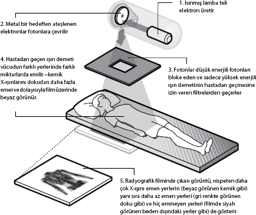

Gizemli ışınların keşfi insan
iskeletinin yapısını nasıl aydınlattı?
Dr. Tim Boon, Londra Bilim Müzesi Baş Küratörü
Evraka anları çoğu zaman tamamen tesadüf eseri yaşanır. Nitekim X-ışınlarının keşfi de böyle olmuştur.
"X-ışınları tıptaki devrimde bir doruk noktasıdır. Önceki teşhis cihazları küçük ve dayanıksızdı, ama röntgen cihazı günümüzde hepimizin faydalandığı, makinelerin hükmündeki tıp çağını başlatmıştır."
Tim Boon
Michael Faraday, 1820'lerde elektrik akımını bir mıknatısın çevresinde döndüren bir cihaz geliştirince ün kazandı: İlkel bir elektrik motoru. On yıl sonra Faraday çok önemli bir buluş daha yaptı. İçindeki hava boşaltılmış kapalı cam bir tüpün içine metal elektrotları yerleştirip elektrotlara yüksek voltaj vererek tüpün içinde esrarengiz bir parıltı elde etmeye başardı.
Faraday'in elde ettiği sonuçlardan etkilenen başka bilimciler bu olguyu incelemeye başladılar. Cam tüpün içindeki hava neredeyse tamamen boşaltılsa bile bir ucunun yine parladığını saptadılar. Bilinmeyen bazı ışınlar tüpün içinden geçiyor olmalıydı. Nitekim Alman fizikçi Eugen Goldstein bu ışınları "katot ışınları" diye adlandırdı.
1895'te bu gizemli katot ışınlarını araştıran başka bir Alman fizikçi Wilhelm Conrad Röntgen farklı bir ışın türüne rastladı. Bu buluşu bilim dünyasını kayda değer ölçüde etkiledi ve ona 1901'de Nobel Ödülü kazandırdı. Röntgen, deneyine müdahale edebilecek doğal ışığı bloke etmek için, kısa ve kalın bir kartonla düzeneği kapattı. Elektriği açtı ve vakum tüpü parlamaya başlayınca, aradaki karton engeline rağmen yakındaki bir ekranın da parlamaya başladığını fark etti. Katot ışınları o ekrana ulaşamazdı, çünkü onlar sadece bir yöne çevrilmişlerdi. Parlamanın nedeninin kartondan garip bir şekilde geçen başka bir ışın olması gerektiği geldi aklına. Şaşkınlık içinde bu ışınlara "X-ışınları" adını verdi: "X" burada bilinmeyen anlamına gelmektedir.
Metal bu gizemli ışınları durdururken, kağıt ve insan derisi durduramıyordu. Karısının ellerini ışın demetiyle fotoğraf filminin arasına koyan Röntgen, ellerin içindeki kemiklerin bir görüntüsünü elde etmeyi başardı.
"1816'da stetoskobun icadıyla temsil edilen teşhis devrimi, on dokuzuncu yüzyıl boyunca devam etti," diyor Boon. "X-ışınlarının keşfiyle birlikte doktorlar vücudun içini ilk kez gerçekten görebildiler."
Röntgen'in inanılmaz keşfini duyan 15 yaşındaki Russell Reynolds hemen kendi röntgen cihazını tasarlamaya koyuldu. Tıp doktoru olan babasının yardımıyla bu okul öğrencisi bir yıl içinde, yani 1896 yılında cihazını bitirmeyi başardı.
"Reynolds'ın cihazı Bilim Müzesi'nde sergileniyor," diyor Boon. "2009'da ziyaretçiler tarafından, müzede sergilenen, hepsi de bilim ve teknoloji tarihindeki önemli aşamaları temsil eden on buluş arasında en beğenileni seçildi."
Röntgen cihazının tıbbi potansiyeli yavaş yavaş aydınlığa kavuşunca, Reynolds'ın icadından sonraki yirmi yıl içinde çeşitli cihazlar yapıldı. Yirminci yüzyıla gelindiğinde, X-ışınlarının ölümcül doğası da keşfedilmişti. Bu ışınlara fazlaca maruz kalmak, deri hücrelerini öldürüyor ve radyasyon yanıklarına yol açıyordu. Bu yüzden daha küçük miktarlarda ve daha seyrek dozları bile ihtiyatla kullanıldı. Fakat sonraki dönemlerde insanlar, bu ışınlara aşırı maruz kalmanın yarattığı tehlikenin boyutlarının farkına vararak sıkı önlemler almaya başladılar.
